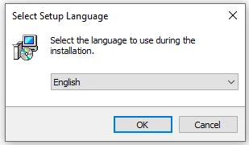
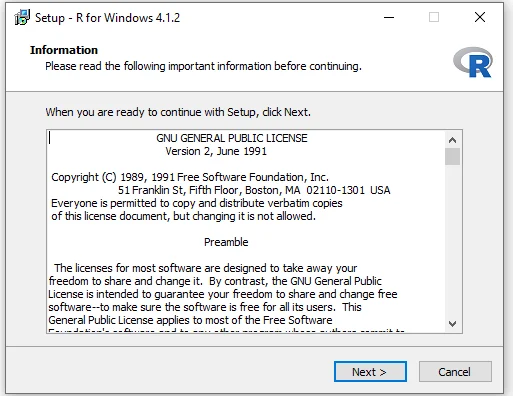
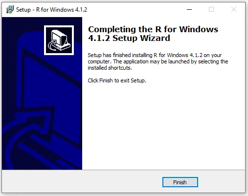
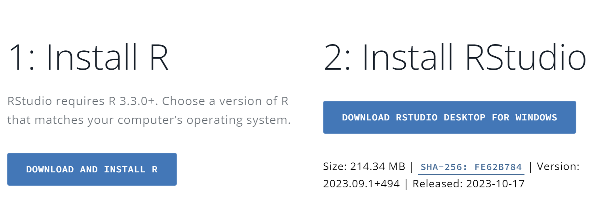

1 Overview of R and RStudio
1.1 Introduction to R
R is a powerful programming language primarily used for statistical computing and graphics. It’s a popular choice among statisticians, data analysts, and researchers for data analysis, statistical modeling, and data visualization. In today’s research landscape, the ability to analyze data is an essential skill regardless of your scientific field, whether it’s health and medical science, other life sciences, physical sciences, technology, business or humanities. This is because each experiment and observation generates data that must be processed, visualized and interpreted to facilitate informed decision-making and enhance human understanding. In this regard, R emerges as an excellent tool for data analysis, offering a multitude of benefits that make it a preferred choice among various programming languages. In this chapter, we will learn about the key features of R and RStudio, and how to install and navigate the RStudio interface.
1.1.1 Key Features of R:
R is an excellent option for data analysis, and there are several reasons to choose this software:
Comprehensive: - R provides a wide range of statistical and graphical techniques needed for data handling, analysis and visualization, and more.
Open Source: - Most importantly, as a free, open-source software, R is accessible to anyone and can be customized to meet specific research needs.
Community Support: - R has a vast community of users and developers who contribute to its growth by sharing code, creating packages, and providing support through forums and social media platforms (That’s also free, isn’t it amazing!!).
Versatility: - R is versatile and can handle data from various formats, including CSV, Excel, SQL, and more.
Integration: - R can be integrated with other software and programming languages, such as Python, C++, and Java, to enhance its capabilities.
Visualization: - R excels at data visualization, providing numerous options for creating graphs, charts, and plots that can help to better understand and communicate data insights.
Extensibility: - R can be extended with over 18,000 packages available on CRAN, which cover a wide range of disciplines and applications.
1.2 Introduction to RStudio
RStudio is an integrated development environment (IDE) for R. It provides a user-friendly interface to R, making it easier for individuals to interact with and learn R. Lets understand this with and example, R and RStudio are like a car and its dashboard respectively. R is the engine that powers your data analysis tasks, while RStudio is the dashboard that helps you interact with that engine more easily.
1.2.1 R: The Engine
R is a programming language designed for statistical analysis, graphics, and data visualization. When you write and run a script in R, the R software processes your commands and returns the results. However, R by itself doesn’t provide a very user-friendly interface.
1.2.2 RStudio: The Dashboard
RStudio is an Integrated Development Environment (IDE) for R. It provides a user-friendly interface to interact with R. It doesn’t replace R, but rather, it complements R to make data analysis tasks easier and more interactive.
Here’s how they work together:
Writing Code: - In RStudio, you write your R code in an R script or R Markdown file (we will learn shortly). This is like having a notepad where you write down the instructions you want the R engine to execute.
Running Code: - Once you’ve written your code, you can run it within RStudio. When you do this, RStudio sends your code to the R engine for execution.
Viewing Results: - The results of your code are then displayed within RStudio, either in the console (we will learn shortly), in plots, or within your R Markdown. document. Interactive Features: - RStudio provides various interactive features like the ability to inspect data objects, view plots, manage your R packages, and even debug your code.
Additional Tools: - RStudio also provides additional tools that make working with R easier, such as auto-completion of code, integrated help and documentation, and support for version control systems like Git. Learning and Debugging: - With its user-friendly interface, RStudio makes it easier to learn R and debug your code. It provides helpful error messages and debugging tools to help you find and fix errors in your code.
In summary, R is the core engine where all your data analysis happens, and RStudio is the friendly dashboard that helps you interact with R efficiently. By using RStudio, you can focus more on your data analysis tasks and less on managing the technicalities of the R language.
1.3 Installing R and RStudio
1.3.1 Installing R
To start using R, you first need to install it on your computer. Here’s how to do it:
Visit the CRAN website: Go to the Official CRAN website to download R. CRAN is the Comprehensive R Archive Network, which hosts the R software.
Choose your Operating System: On the CRAN website, select the version of R suitable for your operating system (Linux, macOS, or Windows).
Download and Install for Windows:
If you’re using Windows, click on “Download R for Windows.”
Select “install R for the first time” if this is your initial installation.
Grant the installer administrative permissions if prompted.
Choose your preferred language when asked.

Select Language Follow the on-screen instructions. R is typically installed in the C drive, but you can choose a different location if you prefer.
Complete the installation process.

Installation Process Click “Finish” upon completion.

Setup Complete You’ll find R in your start menu.
Verify Installation: Once installed, R can be found in the start menu of your computer. However, we’ll primarily use RStudio for interacting with R.
1.3.2 Installing RStudio
RStudio provides a user-friendly interface for working with R. Here’s how to install it:
Visit the RStudio website: Navigate to the Official RStudio website to download RStudio.
Download and Install: Scroll down and click on the blue button that says
DOWNLOAD RSTUDIO DESKTOP FOR WINDOWS/ OR Scroll down more and Select the version of RStudio that matches your operating system and follow the installation instructions. Accessing RStudio: After installation, you can find RStudio in your computer’s start menu. Open RStudio by navigating to the start button (or searching in the search bar) and selecting the RStudio app.
Integration with R: Now that both R and RStudio are installed, they will work together, as explained in Section 1.2.
This setup ensures you have both R and RStudio ready for use, providing a complete environment for your R programming journey.
1.5 Checking Your Installation
Please launch RStudio on your computer. Observe the interface - you should see it divided into three or four panes. This is the standard layout of RStudio.
- If you can see the RStudio interface as described, you’re ready to proceed to the next section.
- If you do not see the RStudio interface or the panes are not visible, please revisit the previous sections to ensure that R and RStudio are correctly installed on your system.
1.6 Common Troubleshooting Tips
If you encounter issues, here are some tips:
- Ensure that you have the latest version of R and RStudio. You can check the latest version of R here and the latest version of RStudio here.
- Check that your script syntax is correct, especially missing parentheses or commas.
- Use the help() function to understand more about R functions and their usage.
- Use the RStudio IDE’s built-in help and documentation features.
1.7 Community and Support
The R community is vibrant and supportive. Engage with it through:
Stack Overflow for programming questions and answers stackoverflow RStudio Community for RStudio specific questions RStudio Community R-bloggers for articles and tutorials from various R bloggers R-bloggers Twitter for the latest news and updates Twitter